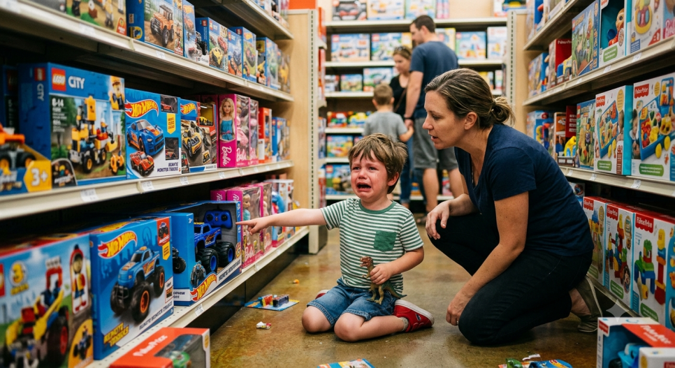

표지
연준이
닻을 걷었다
새 의장은 앞길을 알려주지 않겠다고 했다. 기준이 사라지자 금리가 출렁인다.
연준 · 통화정책
금리는 동결됐지만 반대표 3명은 인하가 아니라 인상이었습니다. 그리고 새 의장은 앞으로 힌트를 주지 않겠다고 했습니다.
새 의장은 앞길을 알려주지 않겠다고 했다. 기준이 사라지자 금리가 출렁인다.
12명 중 9명 동결, 3명은 인상. 인하에 던진 표는 하나도 없었다.
인상에 던진 셋은 모두 지역 연은 총재였고, 이사회 7명은 전원 동결이었다.의장이 이사들을 묶어내는 데는 성공했다는 뜻.
“연준이 정책을 미리 예고하거나 방향을 암시하지 않으면, 시장은 연준의 말이 아니라 경제 상황에 대한 자체 판단을 가격에 반영하게 된다.”앞으로 힌트를 주지 않겠다는 선언. 그동안 기자회견은 그 힌트를 읽는 자리였다.
그린스펀은 이렇게 말하던 사람이다.
“내 말의 의미가 명확하게 들렸다면, 당신이 내 말을 잘못 이해했을 것이다.”
1996년 증시 과열을 경고할 때도 “주가가 높다”가 아니라 “비이성적 과열이 보인다”고 했다.
① 시장이 적응할 시간을 준다 — 빨리 아는 사람과 늦게 아는 사람 사이에 속도 조절이 생긴다.
② 나중에 말을 바꿀 여지를 남긴다.
③ 말이 현실이 되는 걸 막는다 — 의장이 “침체가 예상된다”고 하면 기업은 투자를, 가계는 소비를 멈춘다.
버냉키금리를 0까지 내려 더 쓸 무기가 없자, 연준은 말 자체를 무기로 쓰기 시작했다.
2011년 “적어도 2013년 중반까지 0% 금리를 유지하겠다” — 날짜를 박아버린 것이다.2012년엔 한 단계 더 나아가 지표와 연동했다. “실업률 6.5% 아래로 내려가지 않는 한 올리지 않겠다.”
2013버냉키가 의회에서 한마디 했다. “자산 매입 속도를 늦출 수 있다.”
10년물 금리가 1.94% → 2.96%. S&P500은 한 달간 8% 하락. 신흥국에서 돈이 빠지며 외환위기설이 돌았다.아이가 떼쓰듯 시장이 “돈줄을 끊지 마라”며 저항한다고 해서 테이퍼 텐트럼이라 불린다.
앵커는 배의 닻이다. 내려두면 조류가 밀어도 제자리에 붙들린다.
연준이 앞길을 말해주면 시장 전체가 그 근처에 정박한다. 지표 하나에 금리가 출렁이지 않는다.
워시는 그 닻을 걷었다.
6월 회의 이후 국채금리가 급등했다. 워시는 그 원인 중 하나로 포워드 가이던스 축소를 스스로 지목했다.
그러면서 이렇게 말했다 — 시장이 “심판이 아니라 공을 보고 플레이하는 법을 배우고 있다. 더 나은 변화이며 이제 시작이다.”시장이 보기엔 앵커가 사라진 부작용인데, 워시는 의도한 성과로 규정한다.
“캐빈 워시의 기자회견에서는 의미 있는 답변이 나오지 않을 것 같다. 파월처럼 생중계로 들을 필요는 없어 보인다. … 새벽에 일어나지 않고 꿀잠을 잘 수 있는 날이 1일 추가되었다.”
금리는 동결됐습니다. 그런데 표결 구성이 눈에 띕니다. 12명 중 9명이 동결, 3명이 인상에 던졌고, 인하에 던진 표는 하나도 없었습니다. 인상을 주장한 셋은 모두 지역 연은 총재였고, 이사회 7명은 전원 동결이었습니다. 새 의장이 이사들과 조율에는 성공했다는 뜻이죠.
발표 뒤 기자회견에서 캐빈 워시 의장의 생각은 이 한 문장에 거의 다 담겼습니다.
포워드 가이던스를 하지 않겠다는 말입니다. 그동안 FOMC 뒤 기자회견은 그 가이던스의 감을 잡는 자리였는데, 그걸 안 하겠다니 회견을 챙겨 들을 이유가 줄어든 셈입니다.
그린스펀은 “내 말의 의미가 명확하게 들렸다면, 당신이 내 말을 잘못 이해했을 것이다”라고 말하던 사람입니다. 1996년 증시 과열을 경고할 때도 “주가가 너무 높다”가 아니라 “비이성적 과열이 보인다”는 식이었죠. 여기서 ‘중앙은행의 언어’라는 말이 나왔습니다.
모호하게 말하는 데는 이유가 있습니다. 먼저 시장이 적응할 시간을 줍니다. 먼저 알아채는 사람은 빨리 움직이고 둔한 사람은 늦게 움직이니, 시장이 움직이는 속도가 조절됩니다. 나중에 말을 바꿀 여지도 남기고요. 그리고 결정적으로, 중앙은행장의 말은 자기실현적 예언이 될 수 있습니다. “침체가 예상된다”고 말하는 순간 기업은 투자를 멈추고 가계는 소비를 줄이니, 그 발언 자체가 침체의 방아쇠가 되는 겁니다.
금융위기가 오자 상황이 달라집니다. 연준의 무기는 금리 인하인데 이미 0%까지 내려버렸으니 쓸 게 없었죠. 그래서 말 자체를 무기로 쓰기 시작합니다.
2011년, 연준은 처음으로 “적어도 2013년 중반까지는 0% 금리를 유지하겠다”며 날짜를 박아버립니다. 최소 2년은 안심해도 된다는 생각에 시장이 안정을 찾았죠. 2012년엔 한 단계 더 나아가 지표와 연동합니다. “실업률이 6.5% 아래로 내려가거나 기대인플레이션이 2.5%를 넘지 않는 한 금리를 올리지 않겠다.”
2013년 5월, 버냉키가 의회에서 한마디 던집니다. “고용시장이 지속적으로 개선된다면, 향후 몇 차례 회의 내에 자산 매입 속도를 늦출 수 있다.”
시장은 이걸 “돈 풀기는 끝났다”로 받아들였습니다. 10년물 국채금리가 1.94%에서 2.96%까지 뛰었고, S&P500은 한 달간 8% 빠졌습니다. 신흥국에서는 돈이 빠져나가며 인도·브라질·터키·남아공에 외환위기설이 돌았습니다.

이 사건 이후로 중앙은행장들은 정책을 바꾸기 몇 달 전부터 아주 미세한 신호를 미리 흘리는 관행을 정착시켰습니다.
워시는 이런 힌트 주기에 부정적입니다. 포워드 가이던스는 정상적인 시기에 맞지 않고 위기 대응용 임시 도구라는 생각이고, “중앙은행은 박수도 없고 숨죽여 지켜보는 청중도 없는 환경에서 일하는 데 다시 적응해야 한다”는 입장입니다.
여기서 앵커라는 말이 중요합니다. 앵커는 배의 닻이에요. 닻을 내리면 바람이나 조류가 밀어도 배가 멀리 떠내려가지 않습니다. 연준이 “적어도 2013년 중반까지”처럼 앞길을 말해주면 시장 전체가 기준점을 잡고, 새 지표가 나올 때마다 금리가 출렁이지 않고 그 근처에 정박합니다.
흥미로운 건 워시 본인의 해석입니다. 그는 6월 회의 이후 국채금리가 급등한 원인 중 하나로 포워드 가이던스 축소를 스스로 지목했습니다. 그러면서 시장 참가자들이 “심판이 아니라 공을 보고 플레이하는 법을 배우고 있다. 더 나은 변화이며 이제 시작이다”라고 표현했죠.
시장이 보기에는 연준이라는 앵커가 사라진 부작용인데, 워시는 그걸 의도한 성과로 규정하고 있는 겁니다.
“캐빈 워시의 기자회견에서는 의미 있는 답변이 나오지 않을 것 같다. 파월처럼 생중계로 들을 필요는 없어 보인다. 채권금리 급상승을 ‘진짜 경제 데이터를 시장이 반영했다’고 긍정회로를 돌리는 모습이 신박해 보인다.”
“새벽에 일어나지 않고 꿀잠을 잘 수 있는 날이 1일 추가되었다.”